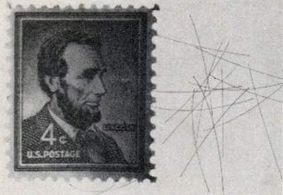

Debris info:
Name:
Country code:
Launch Date:
Mean Motion:
Inclination:
Period:
At the height of the Cold War, all international communications were either sent through undersea cables or bounced off the natural ionosphere. The United States Military was concerned that the Soviets might cut those cables, forcing the unpredictable ionosphere to be the only means of communication with overseas forces.To mitigate the potential threat, a ring of 480,000,000 copper dipole antennas were placed in orbit to facilitate global radio communication. The dipoles collectively provided passive support to Project Westford's parabolic dish to communicate with distant sites. The needles were placed in medium Earth orbit at an altitude of between 3,500 and 3,800 kilometers at inclinations of 96 and 87 degrees. They have contributed to Earth's orbital debris.
